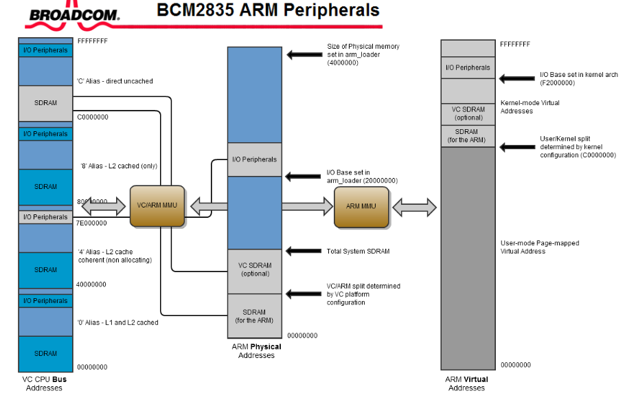
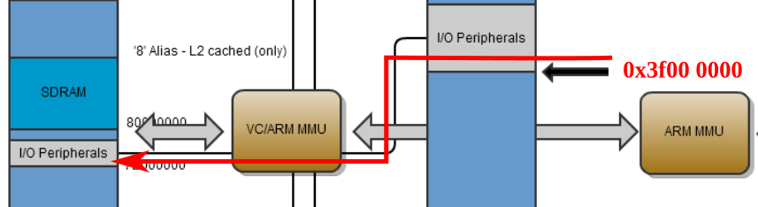
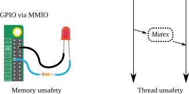
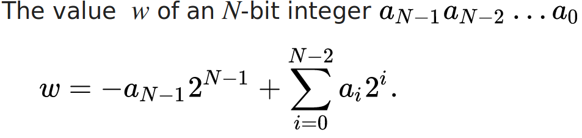
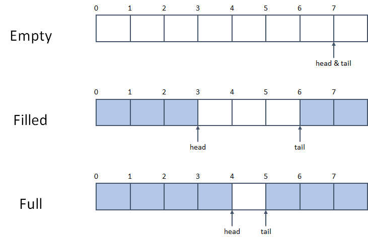
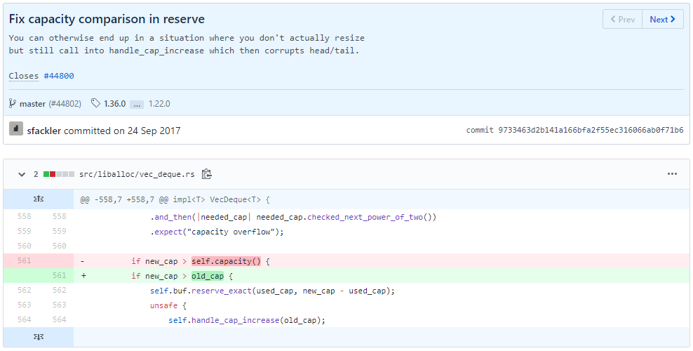

Administrivia
- “Lab 2: Shell and Bootloader” is due in 2 weeks (DUE: Feb 10)!
- FYI, 1.7K Lines, 10K words, 65K characters

Taesoo Kim
Taesoo Kim
The lab mentions that when the GPU onboard the Pi boots up, it searches for specific file names and uses them in stages to initialize and configure the CPU. How can it find and read files before even running the bootloader. Is an OS required for that? Does that mean there is some primitive OS always running on the GPU?
If we are going to use “unsafe Rust” to write system software, then why do we need Rust, which is claimed to be memory safer for its safety mechanisms enforced by the compiler?
Does the required use of unsafe for writing a kernel or device driver in Rust diminish the value of using Rust in the first place? If the majority of the driver’s code is inside unsafe blocks, wouldn’t we run into problems similar to what we would see trying to write safe C?
If Rust uses zero cost abstractions, why doesn’t my code compile instantly.


str/ldr to access peripheral registers

leak()?→ Think about why they can be considered safe? (yet undesirable)
panic vs. crashingpanic: a managed crash (i.e., terminated as expected)→ In OS, both are equally bad; don’t abuse panic or its variants like unwrap
rc)→ What are the legitimate use cases in applications?

e.g., in x86 (32-bit, 4-byte):
- 0x00000000 -> 0
- 0xffffffff -> -1
- 0x7fffffff -> 2147483647 (INT_MAX)
- 0x80000000 -> -2147483648 (INT_MIN) 0x00000001 + 0x00000002 = 0x00000003 ( 1 + 2 = 3)
0xffffffff + 0x00000002 = 0x00000001 (-1 + 2 = 1)
0xffffffff + 0xfffffffe = 0xfffffffd (-1 +-2 =-3)
range(signe integer) = [-2^31, 2^31-1] = [-2147483648, 2147483647]
range(unsigned integer) = [0, 2^32-1] = [0, 4294967295]unsafe operations#![feature(asm)]
fn add(x: u64, y: u64) -> u64 {
let rtn;
unsafe {
asm!("add $0, $2"
: "=r"(rtn)
: "0"(x), "r"(y)
:
: "intel");
}
return rtn
}
dbg!(add(1, 2));Ref. Inline Assembly
extern crate libc;
use std::ffi::CString;
use libc::{size_t, c_char, c_void, c_int};
extern {
fn malloc(size: size_t) -> *mut c_void;
fn printf(format: *const c_char, ...) -> c_int;
}
fn main() {
unsafe { malloc(100); }
let fmt = CString::new("hello: %d\n").unwrap();
unsafe {
printf(fmt.as_ptr(), 1);
}
}drop() will be invokedunsafe blocks of your libraries (e.g., stdlib)
pub fn reserve(&mut self, additional: usize) {
let old_cap = self.cap();
let used_cap = self.len() + 1;
let new_cap = used_cap.checked_add(additional)
.and_then(|needed_cap| needed_cap.checked_next_power_of_two())
.expect("capacity overflow");
if new_cap > self.capacity() {
self.buf.reserve_exact(used_cap, new_cap - used_cap);
unsafe {
self.handle_cap_increase(old_cap);
}
}
}Ref. OOB in VecDeque::reserve(), CVE-2018-1000657.

unsafe!